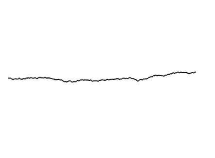
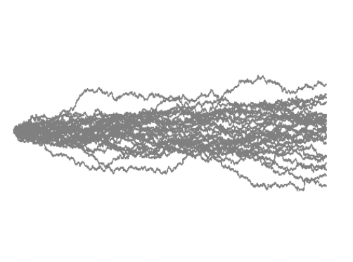
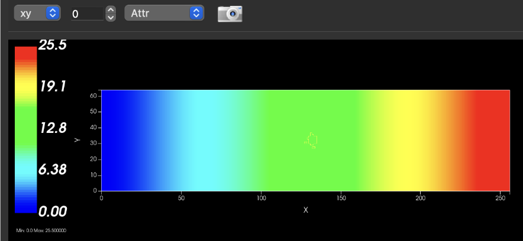
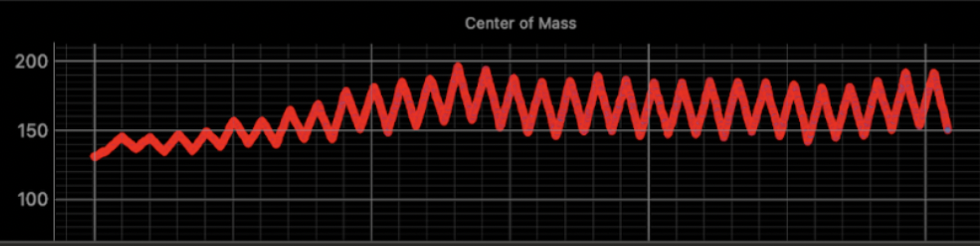
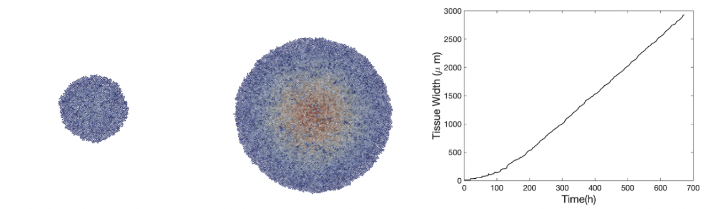
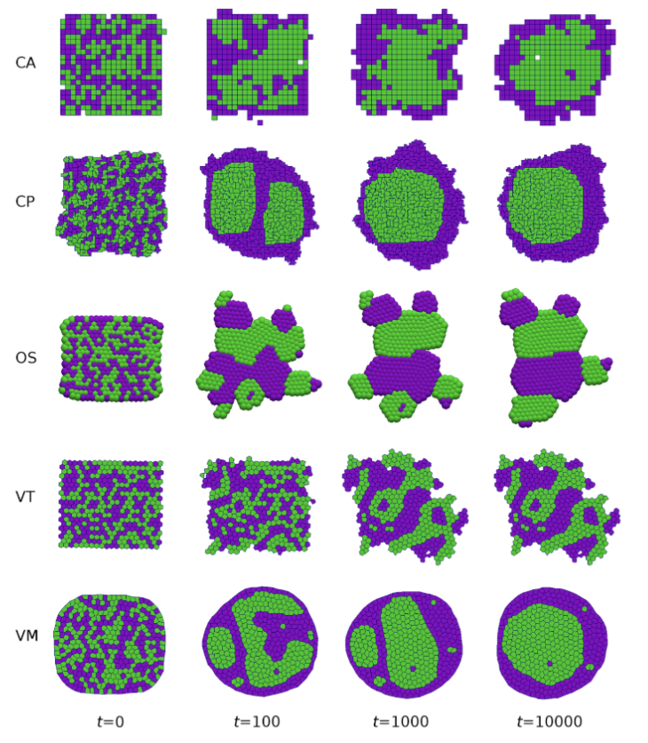

The OpenVT project is using a small set of "reference models" to 1) compare simulation results of various multicellular modeling frameworks, and 2) provide example models for defining model schemas (from the Framework Capabilities project). The reference models that have received our initial focus include:
- Single cell migration (a.k.a. persistent random walk; a.k.a. biased motility)
- Single cell chemotaxis
- Monolayer growth
- Cell sorting
- Angiogenesis
Single cell biased motility (a.k.a. persistent random walk)
A single cell, starting at the far left of the domain, has a force applied to it in the positive horizontal direction, causing motility. However, the force (and motion) is stochastic with a bias, [0,1] (0=random, 1=perfectly positive horizontal). There is no signaling.



The first plot shows the path of a single cell with a bias of 0.7 motion. The other two plots show replicates of a simulation with the same bias for each (0.2 and 0.5).
Single cell chemotaxis


Monolayer growth
Starting with a single cell, cell division occurs and subsequent daughter cells simply push away from each other with the default cell-cell repulsion. There is no cell-cell adhesion nor any signaling.

One experimental paper used for reference, especially for the monolayer growth plot, is Bru, et al (2003)
Cell sorting
Given a random assortment of two cell types, they mix (just random motility, no signaling) and sort into clusters of the same cell type via differential adhesion, i.e., cells of the same type adhere to each other more than cells of opposite types.

From Osborne, et al (2017)
Angiogenesis
This model assumes that cell elongation is a key factor in the formation of stable vascular networks (Merks et al., 2006, doi:)